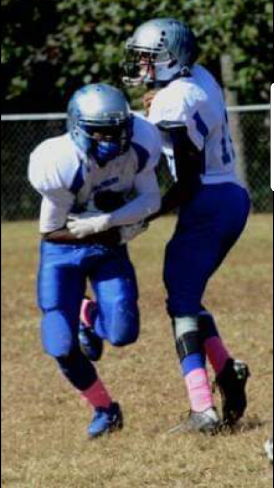

About Me

WHO am I? I am Antonnio Davis. I go by Tony or Ant or Tonio. I graduated from Langston Hughes highschool in May 2019. Since I graduated
I have been using my free time to study real estate and aslo attend the Gt bootcamp program. As a kid growing up I loved technology from games to apps
I a former athlete for 12 years always had a love for technology in all matters. Growing up in a house full of technology not knowing how or what is really possible,
I when able too would spend time with my computure wiz cousin at an young age and watch him work his "magic" to get an better understanding. As years go by living in Fairburn, Georgia with my mother and sibiling I attended RMS which had
an computer coding class. Unfornatually I was only able to take the class for 2 months and never took the class again until now. I am 19 now and have a stronger mind to learn more computer coding I like to code and like to find solutions to problems.